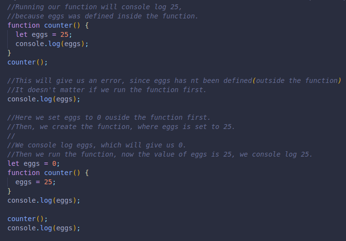
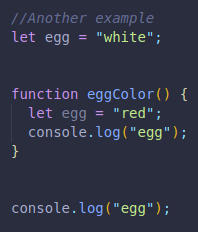

It is variable visibility.
Defining a variable in a function, in the open, nested,etc. will affect where it can be reached from.
Here we have another example, we have a variable with the same name inside and outside a function.
If we just console log egg outside the function, white will be logged.
If we didn't have the outside variable egg defined, we would not be able to access the egg variable from the function at all, it would be out of scope.
If we console log egg from inside the function and only have the outside variable for egg defined there, we could access it again, with it's corresponding value.
